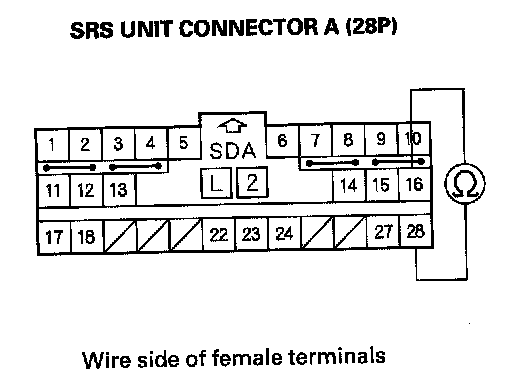

DTC 42-1x
DTC 42-1x ("x" can be 0 thru 9 or A thru F): No Signal From the Right Front Impact SensorSpecial Tools Required
- SRS inflator simulator 07SAZ-TB4011A
- SRS simulator lead L 070AZ-SNAA300
NOTE: Before doing this troubleshooting procedure, review SRS Precautions and Procedures.
1. Erase the DTC memory.
2. Turn the ignition switch ON (II), and check that the SRS indicator comes on for about 6 seconds and then goes off.
Does the SRS indicator stay on, and is DTC 42-1x indicated?
YES - Go to step 3.
NO - Intermittent failure, the system is OK at this time. Go to Troubleshooting Intermittent Failures. If another DTC is indicated, go to the DTC Troubleshooting Index.
3. Turn the ignition switch OFF.
4. Disconnect the negative cable from the battery, and wait for 3 minutes.
5. Check the connections between SRS unit connector A (28P) and the SRS unit, between the right engine compartment wire harness 2P connector and the right front impact sensor, and at connector C203.
Are the connections OK?
YES - Go to step 6.
NO - Repair the poor connections and retest. If DTC 42-1x is still present, go to step 6.
6. Disconnect the fight engine compartment wire harness 2P connector (A) from the right front impact sensor.
7. Disconnect SRS unit connector A (28P) from the SRS unit.

8. Measure the resistance between the No. 16 and No. 28 terminals of SRS unit connector A (28P). There should be an open circuit (ohm meter reads OL) or at least 1 Mohm.
Is the resistance as specified?
YES - Go to step 9.
NO - Short in the right engine compartment wire harness or dashboard wire harness; replace the faulty harness.
9. Measure the resistance between the No. 16 terminal of SRS unit connector A (28P) and body ground, and between the No. 28 terminal and body ground. There should be an open circuit (ohmmeter reads OL) or at least 1 Mohm.
Is the resistance as specified?
YES - Go to step 10.
NO - Short to ground in the dashboard wire harness or the right engine compartment wire harness; replace the faulty harness.
10. Reconnect the negative cable to the battery.
11. Turn the ignition switch ON (II).
12. Measure the voltage between the No. 16 terminal of SRS unit connector A (28P) and body ground, and between the No. 28 terminal and body ground. There should be 0.5 V or less.
Is the voltage as specified?
YES - Go to step 13.
NO - Short to power in the right engine compartment wire harness or dashboard wire harness; replace the faulty harness.
13. Turn the ignition switch OFF.
14. Connect the SRS inflator simulator (jumper connector) and the black lead (A) of simulator lead L to the right engine compartment wire harness 2P connector (B).

15. Measure the resistance between the No. 16 and No. 28 terminals of SRS unit connector A (28P). There should be 0 - 1.0 ohm.
Is the resistance as specified?
YES - Faulty right front impact sensor or SRS unit-replace the right front impact sensor. If the problem is still present, replace the SRS unit.
NO - Poor connection at C203, open in right engine compartment wire harness, or open in dashboard wire harness. Inspect C203. If it is OK, replace the faulty harness.